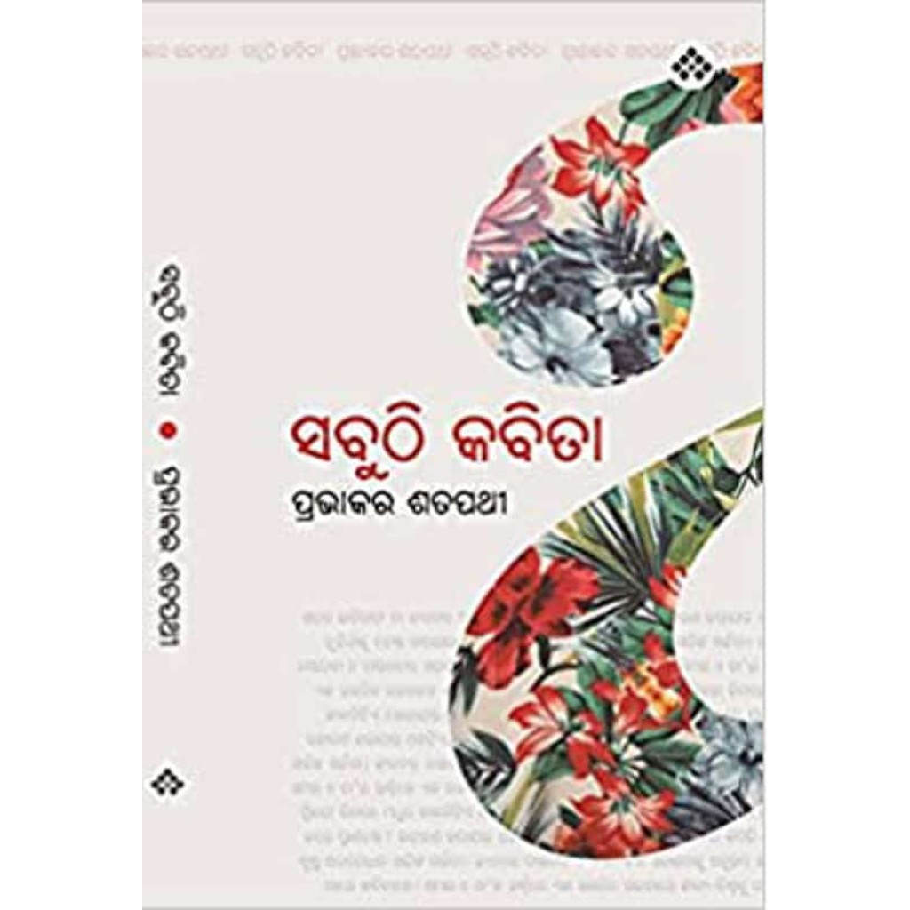
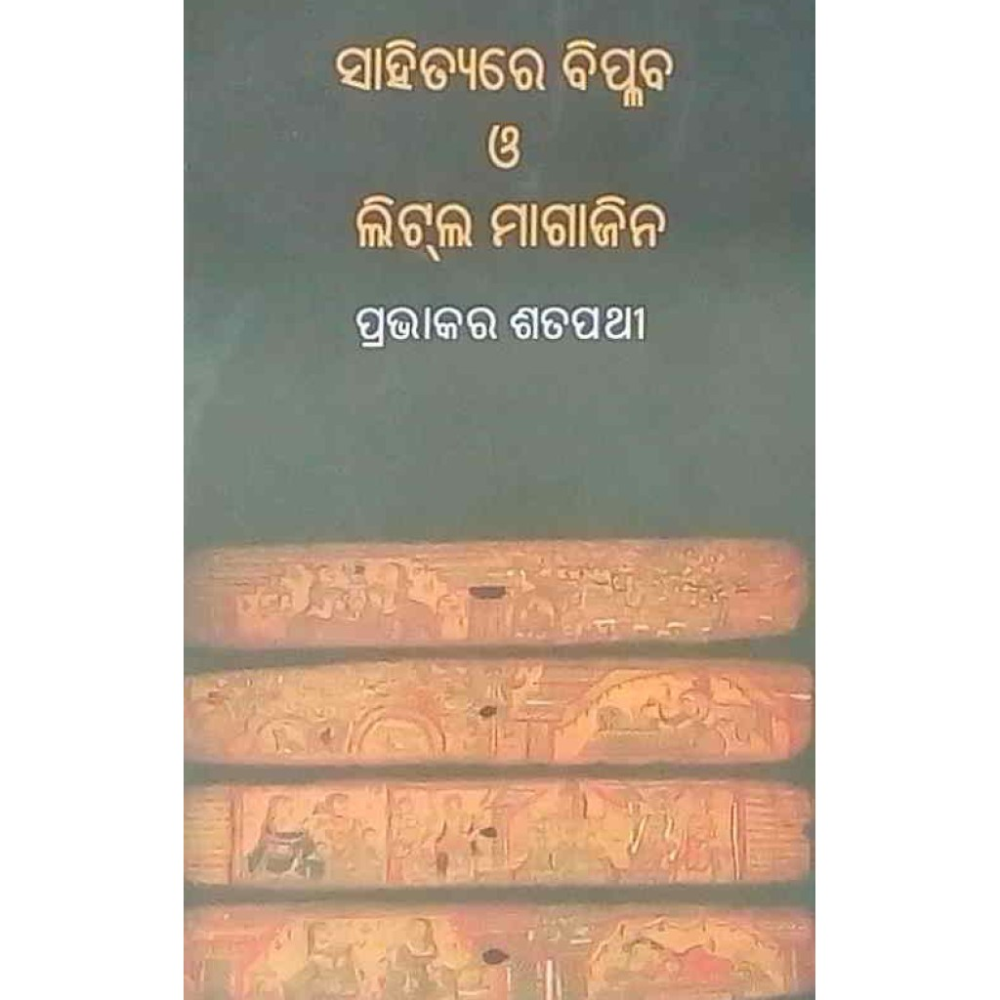

The poet’s literary record
ପ୍ରଭାକର ଶତପଥୀ
Pravakar Satapathy
Writings & conversations
Beyond Singhasan lies a wider record of poems, books, magazine writing and public conversations.
Pravakar Satapathy, born on 15 February 1942, is an Odia poet associated with Jajpur. His work appears across poetry collections, literary periodicals and English translations. This page brings those scattered publications and recordings together, with links back to the evidence.[1, 2, 3]
A growing catalogue · Updated 18 October 2026
Read Singhasan
Books
These eight titles have been traced through bibliographies, writers’ directories, contemporary reviews and publisher records. The dates describe the evidence available; they are not all verified first-publication dates.





Select a cover to view it in full. Covers for five other titles have not yet been located.
- 1981
- 1990
Sabuthi Kabita
ସବୁଠି କବିତା
The national bibliography records a first edition from Janapada Prakashani, Chandikhol: 96 pages. The later PEN IN Books edition carries ISBN 9788195123230. Its back cover identifies PEN IN as an imprint of Odia Media Private Limited and credits the cover design to Subhransu Panda; the edition’s date remains unknown.[5, 6, 7]
- 1999
- 2000
- 2001
- Listed by 2004
- 2014
- Date unknown
Kichi Ranga Kichi Nida
କିଛି ରଙ୍ଗ କିଛି ନିଦ
A title in the 2004 writers’ directory. Its publication date, publisher and original edition remain to be located.[2]
The chronology establishes publications before the listed 2001 date of Singhasan. It does not establish the order in which the books were written.
Poems & the little magazines
Magazines preserve both the poems and the settings in which they first come into view. A signed Basanta appears in Nabarabi in March 1973; later originals document contributions to Istahar, Nabapatra and Samabesa. These are verified appearances, rather than claims of first publication.[16, 8, 17, 18]
Poetry and the little magazine
The Anisha connection
Closing credits in Samabesa in 1995 and 1996 and in Istahar in June 1996 name Anisha Sahitya Patra. They document Satapathy’s association with the publication. The family’s account identifies him as an editor; an original masthead and the dates of his editorial tenure remain to be traced.[18, 19, 20, 21]
His signed 2015 essay କବିତା, କବିକର୍ମ : ଏକ ମିତ୍ର ଦୃଷ୍ଟି in Istahar reflects on poetic practice, experience, language and readers. It also cites his poems Nija Bhitaraku (ନିଜ ଭିତରକୁ) and Kala (କାଳ); their separate original publications have not been located.[22]
Original magazine pages · 20 entries
Dates and page numbers refer to the named issues. Titles retain their original language.
| Title | Publication & date | Pages |
|---|---|---|
| Basanta / ବସନ୍ତ[16] | Nabarabi March 1973 | 65 |
| କାଳ କାଳକୁ[23] | Istahar 65 20 September 1995 | 143 |
| କାନ୍ଦିବାର ଜାଗା / Kandibara Jaga[18] | Samabesa Sharadiya 1995 | 229–230 |
| ଅକ୍ଷର ଭିତର ସାରା[19] | Istahar 67 June 1996 | 103–104 |
| ମୂକ ପାଷାଣ / Muka Pashana[20] | Samabesa Sharadiya 1996 | 259 |
| ରାଜନୀତି / Rajaniti[17] | Nabapatra September–October 1998 | 33 |
| ଅବରୋଧ / Abarodha[24] | Samabesa Sharadiya 1998 | 80 |
| ସମ୍ଭାବନା / Sambhabana[25] | Nabapatra November–December 1999 | 63 |
| କାହାକୁ ପଚାରି ଥାଆନ୍ତି[26] | Istahar 77–78 October 2000 | 314–315 |
| ଶବ୍ଦର ଶାଣରେ / Shabdara Shanare[27] | Nabapatra September–October 2001 | 17 |
| ଗଛର ଶୀର୍ଷରେ[28] | Istahar 84 April–June 2002 | 68–69 |
| ଲାଲ ଘୋଡ଼ା[29] | Istahar 87 January 2003 | 107 |
| ଗଛର ଶୀର୍ଷରେ[8] | Istahar 89 July 2003 | 144–145 |
| ସାରା ଇତିହାସ ତୁମ ହାତ ପରି[30] | Istahar 91 January–March 2004 | 81 |
| ପରିଚୟ[31] | Istahar 103 April 2007 | 114 |
| କିଛି ବି ନାହିଁ ହାତରେ[32] | Istahar 113 January–April 2010 | 97 |
| ଦୁଇଟି କବିତା[33] | Istahar 115–116 October 2010 | 210 |
| କବିତା, କବିକର୍ମ : ଏକ ମିତ୍ର ଦୃଷ୍ଟି[22] | Istahar 135–136 October 2015 | 83–91 |
| ରକ୍ତିମ ସମତଳ[34] | Istahar 143–144 October 2017 | 423 |
| କେଉଁଠି ଖୋଜିବ ବୋଉ?[35] | Istahar 147–148 October 2018 | 358 |
The April–June 2002 and July 2003 appearances of ଗଛର ଶୀର୍ଷରେ share a core text with wording differences. They are not automatically two different poems. The October 2010 group ଦୁଇଟି କବିତା contains ବୁଢ଼ାଲୋକ – ୧ and ବୁଢ଼ାଲୋକ – ୨.
Further periodical records · titles and originals still to trace
Viswamukti
The publisher names Satapathy among the poetry contributors in five issues. The paid issue texts have not been inspected, so poem titles and page numbers remain unknown.
- October–November 1996[36]
- October–December 1997[37]
- October–December 1999[38]
- September–October 2006[39]
- October–December 2018[40]
Jhankar
An author index supplies five further title entries. The original issues and independent identity corroboration remain outstanding.
- ପେଚା — 1968–69; vol. 20, no. 5, p. 532.
- ତ୍ରିରଙ୍ଗ ପତାକା — 1994–95; vol. 46, no. 12, p. 1350.
- ସହରକୁ ଆସିଛନ୍ତି କବି — 1995–96; vol. 47, no. 11, p. 1376.
- ସିଡ଼ି — 1997–98; vol. 49, no. 12, p. 1558.
- ପ୍ରଳୟ ପାଦ — 1999–2000; vol. 51, no. 12, p. 1586. [41]
Nabapatra
ସତ୍ୟର କେଉଁ ରୂପକୁ is indexed for July–August 2000, page 93. The available archive link leads to a different issue; the original contribution remains unverified.[42]
Translations & anthologies
English translation
The Chick
Translated by Rabindra K Swain. A surviving Varnamala web anthology page carries the poem and translator credit. The original Odia title and publication date are unknown.[43, 44]
OoCities literary archive · ArticleThe Chick — Prabhakar Satpathy, translated by Rabindra K SwainThe Chick, an English translation credited to Rabindra K Swain in the surviving Varnamala web anthology.Open source (opens a new tab)English translation
Fear
Translated by Sandhyarani Dash in The Mahanadi Review, issue 13, pages 50–51. The combined issue is dated September 1982–December 1984. Its Odia original has not yet been identified.[45]
In anthologies
Jatindra Mohan Mohanty’s Samakalina Odia Sahitya, 1980–2005, first edition 2007, prints five selections on pages 8–13: Akasha Margaru, Singhasan–35, Singhasan–59, Bou and Bagha Matichi. Two are numbered selections from Singhasan; the earlier sources of the other three are not supplied on those pages.[46]
Kalajayee Odia Kabita also lists Satapathy as a contributor. His name is visible in a contents photograph, but the poem title and page are not clear enough to transcribe confidently.[47, 48]
Interviews & recordings
One extended television interview and two online news reports have been located. Upload dates are given below; full spoken content and individual speaking timestamps have not been indexed.
Interview · 33 min 10 sec
Breakfast Odisha
Uploaded 20 November 2017
Prameya News7’s conversation with poet Prabhakar Satpathy. A substantial source for hearing him speak; the automatic Hindi captions misrecognise the Odia and should not be used as a factual transcript.[49]
Watch on YouTubeNews report · about 5 min 40 sec
Fourteenth Boita Bandana festival
Uploaded 27 November 2023
Austin News identifies him as inaugurator of the celebration at Gajendrapur, Jajpur. The description supports reported participation; it is not a standalone interview.[50]
Watch on YouTubeNews report · about 5 min 20 sec
Jugantara Sanskrutika Parishad · Utkal Divas
Uploaded 1 April 2024
Austin News names him as inaugurator of the organisation’s programme at Balikuda. Awards mentioned for other participants are not attributed to him.[51]
Watch on YouTubeThe two Austin items are online news uploads; a separate television transmission has not been established.
Readings of his work
Contemporary reviews and later anthologies offer a record of how other writers have read his work.
- 1981
P. K. Jagadeb · The Four Generations
In The Mahanadi Review, July–September 1981, Jagadeb places Satapathy within a “fourth generation” of post-independence Odia poets. This is the critic’s grouping, rather than a formal association.[52]
- 1982
Bibhu Prasad Padhi · Anubhutira Sakala
The January–February 1982 Mulyayan review discusses repetition, diction and emotional intensity, offering both praise and criticism. It also provides contemporary evidence for the 1981 collection and its 45 poems.[4]
- 2007
Jatindra Mohan Mohanty · Reading Singhasan
The introduction to Samakalina Odia Sahitya discusses social and political protest and the force of Satapathy’s poetic tone, quoting Singhasan–35 and Singhasan–59. These observations concern the poems, not a record of party affiliation.[46]
- 2014
Deba Prasad Satapathy · Dramatic qualities in poetry
An essay in Samakalina Odia Kabita names the poet on page 233. It is a brief contextual mention, not a dedicated study.[53]
- Date unknown
An endorsement of Susamachara
A Jaipur BookMark 2025 catalogue reproduces Satapathy’s endorsement on Subhransu Panda’s book. The catalogue establishes the surviving credit, not the date when the endorsement was written.[54]
Public literary life
15 November 2013
Reading in rural communities
The National Book Trust records Satapathy, described as an editor and poet, speaking at a National Book Week symposium in Bitana, Jajpur, organised with Junabhadra College.[55]
2014
Kadambini Literary Festival
The organiser’s retrospective brochure names him among the poets who recited at the festival. The exact date and poem have not been established.[56]
8–10 June 2018
Kalinga Literary Festival · announced appearance
Advance reports list him among expected readers. These previews establish an invitation or planned appearance; they do not confirm attendance.[57, 58]
27 March 2024 · report date
Abhiman’s annual celebration
Dharitri reports his participation in the publisher’s third annual event at Jajpur Road and remarks on literary creation. The article does not supply a separate exact event date.[59]
5 January 2025
Kadambini Sahitya Sambardhana
Odisha Sambad and OMMTV name him among senior writers honoured at the festival in Bhubaneswar. Their similar accounts may share a press-release source. No identified recording of his speech or reading has been located.[60, 61]
Still to be traced
Some records are promising but cannot yet be securely added to the poet’s bibliography. They are kept here so that a matching name or incomplete scan does not become an unsupported attribution.
Books, reviews and stories with unsettled attribution
- Grannira Bunabuni / Granny Knits. NBT’s 2026 Odia catalogue lists a 2005 translation of Uri Orlev’s book by ପ୍ରଭାକର ଶତପଥୀ, 42 pages, ISBN 81-237-4466-8. The catalogue credit is clear; whether the translator is this poet remains unconfirmed.[62]
- Jheia / ଝିଅ. A retailer’s author field names Prabhakar Satapathy, while the cover names Sonali Sahu. This disputed item is excluded from the eight-title bibliography above.[63, 64]
- The Asprushya review. A later study cites a review credited to Prabhakar Shatapathy in Bahi Jagat, January–February 2002, page 12. The original review and the reviewer’s identity remain unconfirmed.[65]
- Three early Istahar stories. ବିଦୁରର ଜନ୍ମ ବୃତ୍ତାନ୍ତ (1989), ଅରଣ୍ୟରୁ ଅନ୍ୟବାଟ (1992) and ହନୁମାନର ଛବି (1992) have matching signed bylines in the originals. Independent evidence is still needed to connect these story credits to the poet.[66, 67, 68]
- Bhalu Manisha / ଭାଲୁ ମଣିଷ. A story bibliography lists this title under the same name in Akanksha’s 2021 Puja issue. The original issue and author identity are not yet verified.[69]
Missing pages and recordings
- First editions and Anisha. Original book pages are needed to clarify the Singhasan imprint and Gharatola chronology. An original Anisha masthead would help establish the editorial history.
- Kavighar and Varnamala. A surviving Kavighar page names Prabhakar Satpathy, but the poem images are missing. A 2022 printed Varnamala Anthology of Odia Poetry has incomplete public previews; his inclusion in that edition has not been confirmed.[70, 71, 72]
- The KLF 2018 session video. The official channel has a 52-minute poetry-recitation recording. Its description does not name participants, and no usable transcript was available. It remains a session lead, not a confirmed fourth recording of Satapathy.[73]
- Poem histories. Earlier Odia originals, later collection appearances and reprint histories remain open for several poems and translations. A verified magazine appearance does not by itself establish first publication.
Sources & scope
This page draws on public sources inspected on 17–18 October 2026. Catalogue entries, original pages, publisher summaries and news reports provide different kinds of evidence. Names appear under several English spellings; a shared name alone is not enough for attribution.
Open the source list
- Odia Charita Kosha, volume 2 — printed poet entry Volume 2, p. 850.
- Odia Lekhaka Parichaya, part II: post-1850 AD — Orissa Sahitya Akademi, 2004 p. 161.
- Odia Lekhaka Parichiti — Ashok Mohanty, 2007 Part 1, p. 142.
- Bibhu Prasad Padhi, review of Anubhutira Sakala — Mulyayan14, January–February1982 Review, pp. 40–42.
- National Bibliography of Indian Literature, second series 1954–2000, volume 9: Odia (Sahitya Akademi, 2014) Odia volume, p. 195.
- Sabuthi Kabita — Ritikart
- Sabuthi Kabita — PEN IN Books back cover, photographed by Ritikart Back cover: ISBN, imprint and cover-design credit at the foot.
- Istahar 89, 2003, July — ଗଛର ଶୀର୍ଷରେ Poem and author’s book list, pp. 144–145.
- Odisha RRRLF selected books, 2010–11 p. 12, entry 293.
- Visva-Bharati Library Network — Madhyaratri
- Singhasan — Lulu ebook listing
- Odisha State Bibliography 2007 — Gharatola entry
- Odisha RRRLF recommended books, 2015–16 Document p. 38, row 12.
- Open Library — Sahityare Biplaba O Little Magazine edition record
- Visva-Bharati Library Network — Sahityare Biplaba O Little Magazine
- Nabarabi, volume 3, issues 7–9 — March 1973 issue Poem, p. 65.
- Nabapatra, September–October 1998 — ରାଜନୀତି
- Samabesa, Sharadiya 1995 — Kandibara Jaga Poem and Anisha credit, pp. 229–230.
- Istahar 67, 1996, June — ଅକ୍ଷର ଭିତର ସାରା pp. 103–104.
- Samabesa, Sharadiya 1996 — Muka Pashana Poem and Anisha credit, p. 259.
- Singhasan project author biography
- Istahar 135–136, October 2015 — Kabita, Kabikarma: Eka Mitra Drusti Essay, pp. 83–91.
- Istahar 65, 1995-09-20 — କାଳ କାଳକୁ
- Samabesa, Sharadiya 1998 — Abarodha
- Nabapatra, November–December 1999 — ସମ୍ଭାବନା
- Istahar 77–78, 2000, October — କାହାକୁ ପଚାରି ଥାଆନ୍ତି
- Nabapatra, September–October 2001 — ଶବ୍ଦର ଶାଣରେ
- Istahar 84, 2002, April–June — ଗଛର ଶୀର୍ଷରେ
- Istahar 87, 2003, January — ଲାଲ ଘୋଡ଼ା
- Istahar 91, 2004, January–March — ସାରା ଇତିହାସ ତୁମ ହାତ ପରି
- Istahar 103, 2007, April — ପରିଚୟ
- Istahar 113, 2010, January–April — କିଛି ବି ନାହିଁ ହାତରେ
- Istahar 115–116, 2010, October — ଦୁଇଟି କବିତା
- Istahar 143–144, 2017, October — ରକ୍ତିମ ସମତଳ
- Istahar 147–148, 2018, October — କେଉଁଠି ଖୋଜିବ ବୋଉ?
- Viswamukti, October–November 1996
- Viswamukti, October–December 1997
- Viswamukti, October–December 1999
- Viswamukti, September–October 2006
- Viswamukti, October–December 2018
- Jhankar author index — Prabhakar Satapathy entries Author index, p. 457.
- Nabapatra author index — four Prabhakar Satapathy entries Author index, p. 82.
- The Chick — Prabhakar Satpathy, translated by Rabindra K Swain
- Varnamala: A Representative Anthology of Contemporary Oriya Poetry — contents
- The Mahanadi Review 13, volume III no. 4 — Fear Translation, pp. 50–51.
- Samakalina Odia Sahitya, 1980–2005 — Jatindra Mohan Mohanty, first edition 2007 Introduction, p. 22; poems, pp. 8–13.
- Kalajayee Odia Kabita — Black Eagle Books
- Kalajayee Odia Kabita — retailer photographs of contents
- BREAKFAST ODISHA with Poet Prabhakar Satpathy (20.11.17)
- Fourteenth Boita Bandana festival, Gajendrapur — Austin News
- Jugantara Sanskrutika Parishad Utkal Divas — Austin News
- P. K. Jagadeb, Post-Independence Orissa Poetry (3): The Four Generations — The Mahanadi Review 9 Essay, pp. 43–44; name on p. 44.
- Samakalina Odia Kabita — edited by Bauribandhu Kar, 2014 p. 233.
- Jaipur BookMark rights catalogue 2025 — Susamachara cover Catalogue p. 105.
- NBT Newsletter, January 2014 p. 4.
- Kadambini Literary Festival retrospective brochure 2014 festival account, p. 19.
- Fifth Kalinga Literary Festival preview — OdishaLIVE
- Pavan Varma to deliver keynote at KLF — Odisha Diary
- ସାହିତ୍ୟ ହେଉଛି ଲେଖକଙ୍କ ବୈଭବ — Dharitri
- Odisha Sambad — Jnaneshwar Mule receives Nilimarani Sahitya Samman2025
- OMMTV — Kadambini Literary Festival 2025 report
- National Book Trust, Odia Catalogue 2026 — Grannira Bunabuni / Granny Knits Catalogue p. 168, entry 141.
- Jheia — Odisha eStore, disputed attribution
- Jheia — cover supplied by Odisha eStore
- Caste, Reality and Mediation — public text mirror
- Istahar 46, 1989, October–December — ବିଦୁରର ଜନ୍ମ ବୃତ୍ତାନ୍ତ
- Istahar 53, 1992, January–March — ଅରଣ୍ୟରୁ ଅନ୍ୟବାଟ
- Istahar 55–56, 1992 combined special issue; month range unresolved — ହନୁମାନର ଛବି
- Saral Kumar Das — Odia Kshudragalpa2021 bibliography
- Kavighar — Prabhakar Satpathy page
- Ketaki Foundation — Varnamala Anthology of Odia Poetry (2022)
- Ketaki Books — Varnamala product page and original preview images
- Kalinga Literary Festival 2018: Poetry Recitation — official session video